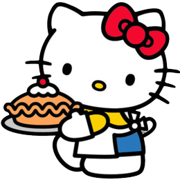
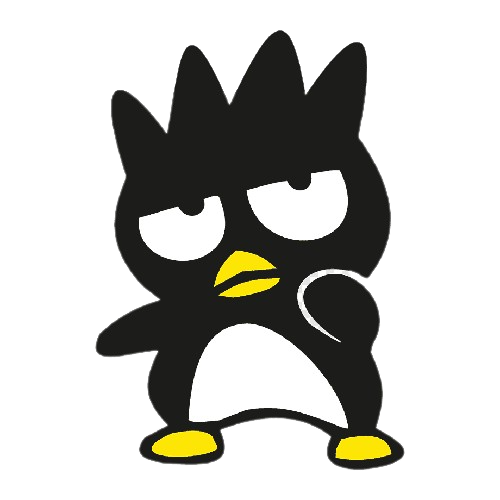
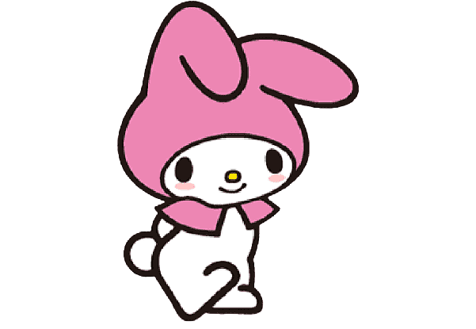
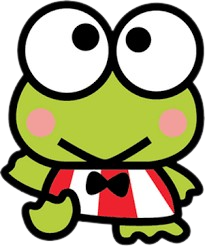
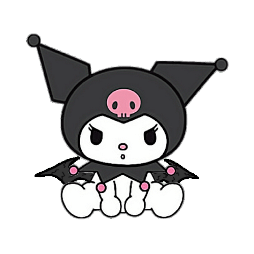
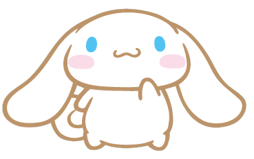

Personagens
-
HELLO KITTY
Sua comida preferida é torta de maça!
Ela ama cozinhar com seus amigos e ama fazer piqueniques!
-
BADTZ MARU
Badtz maru é um pinguim muito travesso.
Ele ama pregar peças em sesus amigos!
-
MY MELODY
Ela é a personagem mais querida e carinhosa.
Um fato muito importante é que ela ama rosa mais que tudo!
-
KEROPPI
É um sapinho que mora com sua família em uma grande casa a beira do lago Donut!
-
KUROMI
Assim como o Badtz Maru a kuromi é uma menina bem levada!
(secretamente ela ama rosa e livros de romance)
-
CINNAMON ROLL
Ele é um personagem muito calmo e carinhoso!
Suas cores favoritas são azul e branco.
Redes e Internet
| Protocolos de Rede | ||
|---|---|---|
| Sigla | Significado | Uso |
| HTTP | HyperText Transfer Protocol | Torna a navegação na web possível, o acesso a sites e o uso de links. |
| IP | Internet Protocol | Usado para endereçamento dos dispositivos conectados em uma rede. |
| FTP | File Transfer Protocol | Usado para transferência de arquivos em uma rede. |
| SMTP | Simple Mail Transfer Protocol | Usado para envio e recebimento de e-mails. |
| Tabela descritiva | ||